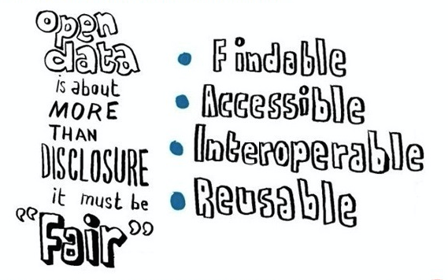

Creative Commons Attribution 4.0 International Public License (CC-BY)
Samenvatting
In deze White paper kijken we terug op 10 jaar standaarden ontwikkelen en beheren. Hierbij richten we ons specifiek op
de set Geostandaarden van de Pas toe of leg uit-lijst van het Forum Standaardisatie. Deze set vormt de ruggengraat
van de Nederlandse spatial data infrastructure (SDI). Op basis van trends en technologische ontwikkelingen proberen
we 5 jaar vooruit te kijken en de vraag te beantwoorden of de huidige set standaarden nog volledig voldoet. In hoeverre
zijn innovaties en ontwikkelingen zo volwassen geworden, dat ze weerslag hebben op de standaarden die we nu beheren?
Status van dit document
Deze paragraaf beschrijft de status van dit document ten tijde van publicatie. Het is mogelijk dat er actuelere versies van dit document bestaan. Een lijst van Geonovum publicaties en de laatste gepubliceerde versie van dit document zijn te vinden op https://www.geonovum.nl/geo-standaarden/alle-standaarden.
Dit is een document zonder officiële status.
Dit is de definitieve versie van de whitepaper. Tijdens de Open Geodag op 31 mei presenteerde Friso Penninga de whitepaper en
is het startschot gegeven voor de openbare consultatie. Deze consultatie liep tot en met 21 juli 2017. De reacties
zijn inmiddels verwerkt.
1. Inleiding
Terugkijkend op tien jaar standaarden ontwikkelen en beheren, kunnen we vaststellen dat we in Nederland inmiddels een
volwassen set geostandaarden kennen, die fungeert als de ruggengraat van de nationale spatial data infrastructure (SDI).
Deze set standaarden is opgenomen op de Pas toe of leg uit-lijst van het Forum Standaardisatie. Geonovum beheert -als hoeder van deze ruggengraat- deze set en is van de meeste afzonderlijke
standaarden ook de beheerder. De set geostandaarden bevat het Basismodel Geo-informatie [NEN3610], het 'moedermodel' van veel informatiemodellen waarmee semantiek van
datasets éénduidig wordt vastgelegd, en een aantal standaarden die vastleggen hoe we deze datasets kunnen uitwisselen
[GML], ontsluiten (Nederlandse profielen op WMS [WMS-NL] en WFS [WFS-NL]) en vindbaar maken (Nederlandse metadataprofielen
voor geografie [ISO19115-nl] en voor services [ISO19119-nl]).
Hoewel de huidige SDI met de INSPIRE richtlijn, de datasets van geo-basisregistraties, en voorzieningen als PDOK niet
meer weg te denken is uit de dagelijkse praktijk van het geo-informatiewerkveld, is een SDI nooit uitontwikkeld. Technologische
ontwikkelingen volgen elkaar in hoog tempo op en de maatschappelijke vragen evolueren. Waar de SDI oorspronkelijk alleen
op de geo-professional gericht was, verwachten we tegenwoordig dat de SDI toegankelijk wordt voor een veel bredere
gebruikersgroep, waaronder de web-ontwikkelaars. Deze beoogde verbreding komt voort uit de toegenomen aandacht voor
(her)bruikbaarheid van data, waar oorspronkelijk de focus meer lag op de ontsluiting zelf. Deze verschoven focus zien
we nu ook onder de noemer 'van open data naar FAIR data', een concept oorspronkelijk bedacht voor wetenschappelijke
(onderzoeks)data. Essentie hiervan: data dient niet alleen open te zijn, maar ook vindbaar, toegankelijk, interoperabel
en herbruikbaar.

Figuur 1"Fair" open data
In de toekomst verwachten we meer samenhang (en consistentie) tussen individuele datasets, meer detail in datasets (overgang
van 2D naar 3D), meer datavolume, data die veel frequenter wijzigt of zelfs continu (denk aan sensordata), en vormen
van toegang tot data die aansluiten bij de gebruikerswensen van de veel bredere gebruikersgroep van de Nederlandse
SDI.
De Nederlandse SDI kan alleen succesvol meegaan in deze ontwikkeling, wanneer de onderliggende set standaarden dit afdoende
ondersteunt. Daarom stellen we ons in deze white paper de vraag of de huidige set standaarden nog volledig voldoet.
In hoeverre zijn innovaties en ontwikkelingen zo volwassen geworden, dat ze weerslag hebben op de standaarden die we
nu beheren? Langs de lijn van de geostandaarden die op de Pas toe leg uit-lijst staan, schetsen we welke updates van
deze standaarden er de komende 5 jaar mogelijk gaan komen. Input hiervoor komt uit ontwikkelingen die Geonovum de afgelopen
jaren heeft verkend en gevolgd in de innovatieplatforms rond 3D, Linked Data, Sensoren en het Web en in internationale
context. Op sommige punten kunnen we al aanbevelingen geven, op andere zijn er nog open vragen.
1.1 Scope
De scope van deze white paper beperkt zich tot de set geostandaarden die op de Pas toe of leg uit-lijst staat van het
Forum Standaardisatie. Deze standaarden vormen gezamenlijk de ruggengraat van de Nederlandse SDI. Door vooruit te
kijken naar de ontwikkelingen rond deze set standaarden, schetsen we hiermee automatisch de toekomstige ontwikkelingen
van de Nederlandse SDI. Het is overigens goed denkbaar dat over vijf jaar de Nederlandse SDI minder herkenbaar is
als afzonderlijke infrastructuur, maar eerder gezien kan worden als de ruimtelijke component van de generieke digitale
infrastructuur.
2. Relevante trends
2.1 Meer 3D geo-informatie
Hoewel de steeds realistischer ogende visualisaties, inclusief tools als de Oculus Rift VR bril en de Hololens AR bril
tot de verbeelding spreken, schuilt in de opkomst van deze tools niet de belangrijkste reden dat SDI's steeds meer
richting 3D gaan. De stap van 2D naar 3D is ook de stap van een grover naar een gedetailleerder model. En die gedetailleerdere
modellen zijn steeds harder nodig, omdat de maatschappij steeds gedetailleerdere ruimtelijke vragen stelt, bijvoorbeeld
over de fysieke leefomgeving en de kwaliteit daarvan. “Hoeveel geluidsbelasting ondervind ik na realisatie van die
nieuwe weg?”, “Zit ik straks met een slagschaduw in mijn tuin, wanneer die windmolen daadwerkelijk geplaatst wordt?”.
Tegelijk wordt ook de wereld waarover die vragen worden gesteld, steeds complexer. Om gedetailleerdere vragen over
een complexere wereld te kunnen beantwoorden, moeten modellen die werkelijkheid beter benaderen. 3D is daardoor steeds
noodzakelijker om antwoorden op maatschappelijke vragen te kunnen geven.
Naast de toenemende vraag zien we ook een aantal technologische doorbraken, die het mogelijk maken om tegen acceptabele
kosten te voldoen aan die vraag naar actuele 3D modellen. In de komende jaren zullen landsdekkende 3D modellen beschikbaar
gaan komen, op een schaalniveau vergelijkbaar met de BGT. De Nederlandse SDI zal dergelijke modellen aan moeten kunnen.
2.2 Meer sensoren
Het gebruik van sensoren in de openbare ruimte neemt een enorme vlucht. Zo spreken de toepassingen voor openbare orde
en veiligheid in het Living Lab Stratumseind tot de verbeelding, maar zien we ook tal van toepassingen op milieugebied
(o.a. rond het meten van luchtkwaliteit), bereikbaarheid (o.a. rond doorstroming en beschikbare parkeerplekken) en
de zelfrijdende auto. Veel toepassingen komen tot stand binnen Smart City-initiatieven of experimenten rond het Internet
of Things. Met deze enorme groei in toepassingen, neemt ook het aantal standaardisatie-initiatieven snel toe. Internationale
organisaties als OGC, W3C, IETF en IEEE werken allen aan standaarden op dit vlak. Deze standaarden
richten zich zowel op het vastleggen van gegevens over sensoren als op het ontsluiten van door de sensoren ingewonnen
gegevens.
Hoewel het INSPIRE framework voorziet in standaarden voor het ontsluiten van sensordata, zijn er nog nauwelijks concrete
toepassingen op dit vlak. In vergelijking met trends op het gebied van 3D en linked data is de sensortrend nieuwer
en minder volwassen. Een ontwikkeling die wel duidelijk zichtbaar is en als voorloper van de doorbraak van sensoren
gezien kan worden, is het groeiende belang van data uit de categorie Observations and measurements. Door technologische
ontwikkelingen rond inwintechnieken groeit het aanbod van coverages, bijvoorbeeld rond hoogte (denk aan AHN) en diepte
(bathymetrie). Deze groei zien we in domeinen als hydrografie, meteorologie en de ondergrond. Een andere tendens
die we zien rond sensoren is de trend naar lichtere standaarden, mede met het oog op het minimaliseren van dataverkeer
(wat zeker bij LoRa van groot belang is) en het maximaliseren van batterijduur van bepaalde sensoren.
2.3 Meer linked data
In het Platform Linked Data Nederland, voorheen PiLOD, heeft Geonovum de afgelopen
vier jaar samen met een actieve community onderzocht wat linked data is, hoe je het toepast, wat je eraan hebt, en
hoe je geodata als linked data kunt publiceren en gebruiken. Ook het #geo4web
testbed heeft inzichten hierover opgeleverd. Inmiddels hebben de eerste serieuze Nederlandse geo linked datasets
het licht gezien, dankzij het Kadaster (Kadastrale
percelen (BRK) en Topografie
(BRT)).
Er zal de komende vijf jaar veel (overheids) linked geodata gepubliceerd worden. Naast Nederland hebben onder andere
Ierland, Schotland, UK, Vlaanderen, Zwitserland en Finland al linked geodata gepubliceerd of zijn hier mee bezig.
Linked data is belangrijk voor het publiceren van overheidsdata op een zo rijk mogelijke manier. Het maakt het mogelijk
om de betekenis, de semantiek van de data direct aan de data zelf te koppelen, en om tot op een hoge granulariteit
links tussen verschillende datasets te leggen. Kortom, linked data is belangrijk voor semantische interoperabiliteit
en data integratie. Het is op dit moment de meest rijke en krachtige manier is om data beschikbaar te stellen.
Linked data is op dit moment een niche technologie. Voor het merendeel van de web developers is het te complex. Maar
dit zou de komende jaren kunnen veranderen. We zien een ontwikkeling richting het 'web van data' waarbij wel een
aantal basisprincipes van linked data wordt overgenomen, maar niet het (complexe) datamodel. Met andere woorden "linked
data" is niet per sé "Linked Data": wél elk object op het web met een eigen URI, metadata en links tussen de objecten;
maar niet per sé met RDF [rdf-concepts], triple stores en SPARQL endpoints.
In de zomer van 2017 verscheen de W3C/OGC Spatial Data on the Web Best Practice [sdw-bp]. Dit document, waaraan wij
mee schreven, gaat niet exclusief over linked data, maar bevat er veel aanbevelingen over uit de huidige praktijk
en kan als leidraad dienen voor het publiceren van linked geo data in Nederland. Op een aantal punten is er volgens
de Best Practice nog geen duidelijke, goede praktijk te ontwaren. Er moet de komende jaren bijvoorbeeld nog aan gewerkt
worden aan een gestandaardiseerde vocabulaire voor geo-data én eentje voor geo-metadata.
In het verlengde van linked data ligt het semantic web. Langzaam
maar zeker werken we hier naar toe. We denken daarbij aan semantische harmonisatie. Zonder de hele geowereld te willen
harmoniseren, want dit zou een enorme klus zijn waarvan het praktisch nut niet vaststaat. Wel blijven we gericht, daar
waar semantische harmonisatie leidt tot nieuwe mogelijkheden om data te hergebruiken en processen te optimaliseren,
linked data principes toepassen om te komen tot een Web van data waarin niet langer overbodig data gekopieerd wordt.
2.4 Meer gebruikers: Geo & World Wide Web
Via de Nederlandse SDI wordt een schat aan geo-informatie ontsloten, die voor het overgrote deel als open data wordt
aangeboden. Toch beperkt het gebruik zich nu vaak tot het traditionele werkveld van de geo-informatie, terwijl juist
de basisinformatie bruikbaar zou moeten zijn voor een veel bredere groep gebruikers. De intermediair tussen de data-aanbieder
en de eindgebruiker is tegenwoordig steeds vaker een webontwikkelaar. Deze webontwikkelaars gebruiken nu echter slechts
mondjesmaat de kwalitatief hoogwaardige geo-informatie via de Nederlandse SDI. Veel vaker kiezen ze voor platforms
als Google Maps of Open Streetmap. Dit wordt veroorzaakt door een combinatie van factoren: deels komt dit voort uit
onbekendheid met het bestaan en de opbouw van geo-informatie, deels uit het gegeven dat geo-informatie slecht vindbaar
is via zoekmachines en deels uit het gebruik van specifieke geo-standaarden, die buiten het geo-domein veel onbekender
zijn en daardoor een drempel voor web-ontwikkelaars. Uiteindelijk zorgt dit ervoor dat het hergebruik van open data
slechts beperkt plaats vindt, waardoor niet het volledige potentieel aan maatschappelijke impact gerealiseerd kan
worden. Webontwikkelaars spelen zeker in commerciële en op burgers gerichte toepassingen een belangrijke rol.
In een aantal recente initiatieven (o.a. het testbed Spatial data on the web en de gezamenlijke OGC en W3C-werkgroep
Spatial data on the web) is gezocht naar mogelijkheden om de doelgroep van de Nederlandse SDI nadrukkelijk te verbreden
tot buiten het traditionele geo-informatie domein. De wereld van de webontwikkelaar inclusief de in die wereld gangbare
standaarden staat centraal. Oplossingsrichtingen schuilen onder andere in het gebruik van lichtere datastandaarden
en het aanbieden van API's, codevoorbeelden en andere coördinaatsystemen. Ook wordt gewerkt aan het verbeteren van
de vindbaarheid in zoekmachines. De W3C Data on the Web Best Practices [dwbp] en mede door Geonovum geschreven
Spatial Data on the Web Best Practices [sdw-bp] vormen een goed uitgangspunt. Een ander interessant concept op
dit vlak is de in ontwikkeling zijnde Gegevenscatalogus voor het Digitaal Stelsel Omgevingswet (DSO). Die catalogus
levert informatie welke gegevens er in het DSO beschikbaar komen en wat die gegevens betekenen (semantiek). Dit doet
de catalogus door begrippen en definities te ontsluiten, een overzicht van de datasets te geven, informatiemodellen
te publiceren en een overzicht te bieden van producten en diensten die beschikbaar zijn. Deze gegevenscatalogus kan
helpen data beter vindbaar te maken voor nieuwe gebruikers: mits de catalogus wordt geïndexeerd door zoekmachines,
kunnen gebruikers die via Google of Bing naar data over hoogspanningsmasten zoeken bij BGT data terecht komen, iets
dat nu via PDOK of NGR niet zou
lukken.
2.5 Meer kanalen: platformgedachte
Alle hierboven beschreven ontwikkelingen roepen wellicht de vraag op of de huidige SDI nog wel zinvol is, en daarmee
ook of de onderliggende set standaarden op de Pas toe of leg uit-lijst nog wel zinvol is. Om die vraag te kunnen
beantwoorden, is een laatste ontwikkeling zeer relevant om te duiden: de opkomst van het platform. Dataplatformen
kenmerken zich door de veelheid aan manieren waarop de data kan worden afgenomen: via downloads, via services, via
API's of via SPARQL endpoints. De onderliggende reden voor deze veelheid is de erkenning van het gegeven dat er veel
verschillende doelgroepen bestaan, met elk hun eigen toepassingen, die daarom ook elk hun data op een andere manier
willen afnemen. De opkomst van platformen illustreert dat er niet langer naar een uniforme one size fits all aanpak wordt gestreefd, maar naar een multichannel aanpak, meer fit for purpose. Deze doelgroepspecifieke
benadering is het gevolg van de focusverschuiving van ontsluiting van data naar (her)bruikbaarheid van data. Overigens
kunnen zeker de niet-specialistische gebruikers baat hebben bij platformen die de data ook goed visualiseren, bijvoorbeeld
bij het beoordelen van de bruikbaarheid van de data voor de beoogde toepassing.
Met de opkomst van platformen, komt ook de vraag naar voren in hoeverre de huidige SDI al als platform beschouwd kan
worden. Op dit moment lijkt de SDI primair gericht op de geoprofessional, inclusief standaarden uit de geowereld
(OGC). Andere doelgroepen, zoals de webontwikkelaars, worden duidelijk minder goed ondersteund. Een platformbenadering
zou passend zijn voor de SDI, waarmee de set standaarden uitgebreid kan worden met standaarden die lichter zijn en
beter aansluiten bij de praktijk op het web.
3. Impact op Pas toe of leg uit-standaarden
in dit hoofdstuk proberen we, op basis van de geschetste trends, te voorspellen wat de invloed hiervan is op de huidige
geostandaarden. Binnen afzienbare tijd verwachten we geen geostandaarden uit de pas toe of leg uit-lijst te zullen
schrappen. Wel zullen bestaande standaarden mogelijk veranderen onder invloed van trends, en kan de lijst groeien om
aan de behoefte van nieuwe gebruikersgroepen te voldoen.
3.1 Informatiemodel
Informatiemodellen blijven een belangrijke hoeksteen van de SDI. De rol van semantiek, die je met behulp van informatiemodellen
kunt beschrijven, wordt steeds groter. [NEN3610] fungeert niet alleen als moedermodel voor alle sectorale informatiemodellen,
maar vormt ook een werkwijze voor het stelsel van sectorale informatiemodellen. Op beide aspecten zal NEN3610 zich
de komende jaren verder ontwikkelen. De eerste ontwikkeling is de stap naar harmonisatie tussen informatiemodellen,
bijvoorbeeld tussen de informatiemodellen onder verschillende geobasisregistraties. Nu het gebruik van deze registraties
steeds verder toeneemt en dit bovendien voor een deel is toe te schrijven aan nieuwe gebruikers die minder vertrouwd
zijn met de geosector, worden (ogenschijnlijke) discrepanties tussen de verschillende datasets steeds vaker als hinderlijk
ervaren. Er lopen verschillende initiatieven op dit terrein, waaronder Doorontwikkeling in samenhang van het Ministerie
van Infrastructuur en Milieu en opeenvolgende projecten bij Geonovum, o.a. rond semantische afstemming tussen NWB
en BGT. Uit deze projecten leren we dat harmonisatie niet alleen draait om de data (het harmoniseren van de populatie
van datasets), maar zeker ook om het harmoniseren van processen (herkennen van triggers die voor elkaars processen
relevant zijn). Ook blijkt dat verschillende definities of afbakening van (schijnbaar) dezelfde objecten soms niet
alleen verklaarbaar, maar zelfs buitengewoon wenselijk zijn vanuit verschillend gebruik van afzonderlijke datasets.
De inconsistenties die gebruikers soms ervaren, worden voor een aanzienlijk deel veroorzaakt doordat in sommige modellen
functie en fysiek voorkomen niet goed gescheiden zijn. Zo zou het bijvoorbeeld logisch zijn als verhardingssoort
aan een BGT Wegdeel wordt gekoppeld, terwijl de kwalificatie of iets een autoweg, regionale weg of lokale weg is,
beter aan een NWB Weg gekoppeld kan worden. Hoewel de daadwerkelijke aanpassingen op het niveau van de individuele
informatiemodellen plaats zullen vinden (bijvoorbeeld in IMGeo 3.0), is het goed denkbaar dat modelleringsrichtlijnen
als het scheiden van functie en fysiek voorkomen in de NEN3610 werkwijze verankerd worden.
Een andere ontwikkeling is gerelateerd aan de opkomst van Linked Data: steeds meer sectorale datasets worden 'verlinkt'.
Op dit moment gebeurt dit op het niveau van individuele informatiemodellen. Het risico hiervan is dat we de samenhang,
die nu bestaat tussen de verschillende informatiemodellen in de UML-wereld, verliezen in de Linked Data wereld. Daarom
ontstaat de behoefte aan een Linked Data-profiel op NEN3610. Een dergelijk profiel zou handreikingen kunnen geven
voor het publiceren van geo-informatie als linked data, maar ook bijvoorbeeld gemeenschappelijke begrippen kunnen
vastleggen en relaties kunnen leggen met andere, gangbare vocabulaires, zoals schema.org.
Met beiden beogen we de 'linkbaarheid' van gegevens in de Nederlandse SDI zo groot mogelijk te maken, omdat dit zowel
het gebruik (door betere vindbaarheid) als de bruikbaarheid (door beter begrip van de betekenis) vergroot.
Het toepassen van linked data op NEN3610-modellen roept wel een fundamentele vraag op. Centraal uitgangspunt van linked
data is de 'open world assumption', waarmee de linkbaarheid maximaal is. Dat rechtvaardigt de vraag of het niet wenselijk
-of wellicht zelfs noodzakelijk- is om dit ook als uitgangspunt bij NEN3610 in te brengen. We kiezen er nu echter
bewust voor om dat niet te doen en daarmee uit te blijven gaan van de closed world assumption van NEN3610. De belangrijkste
overweging hierbij is dat de closed world assumption validatie mogelijk maakt. En omdat juist in een SDI betrouwbare
en correcte overheidsdata centraal staat, is valideren een must. Daarom kiezen we er voor om NEN3610 zelf intact
te laten en met een Linked Data-profiel de linkbaarheid te vergroten. Hiertoe geven we bijvoorbeeld handreikingen
over hoe dit te realiseren is, bijvoorbeeld door de keuze voor het juiste semantische level of detail. Neem bijvoorbeeld
de BAG: die kent het object Openbare Ruimte. De kans dat 'willekeurige' gebruikers van buiten de BAG-context relevante
data willen linken aan openbare ruimten is klein, omdat dit een onbekend begrip is van een vrij hoog abstractieniveau,
terwijl die kans bij de verschillende typen Openbare Ruimte (o.a. Weg, Water en Spoorbaan) een stuk groter is. Door
Weg als object te nemen (i.p.v. het generiekere Openbare Ruimte), vergroot je de linkbaarheid.
Vanuit Linked Data-perspectief is het beter vastleggen van relaties tussen begrippen een aandachtspunt voor de komende
jaren, maar dit is zeker niet de enige drijfveer hiervoor. We zien dat met het verder volwassen worden van de SDI
het aanbod aan datasets steeds verder toeneemt. En deze verschillende datasets bevatten ook steeds vaker gegevens
over (schijnbaar) dezelfde objecten. Neem bijvoorbeeld wegen: steeds vaker wordt de vraag gesteld waarom de populaties
van het NWB (Nationaal Wegenbestand), BGT (Basisregistratie Grootschalige Topografie) en BAG (Basisregistratie Adressen
en Gebouwen) nu eigenlijk van elkaar verschillen. Experts uit het geodomein zijn vaak vertrouwd met dergelijke verschillen
en kennen veelal de oorzaken, maar met het steeds bredere gebruik buiten het traditionele werkveld, neemt het aantal
gebruikers dat dergelijke verschillen niet kan duiden steeds verder toe. Om hier mee om te kunnen gaan, is het noodzakelijk
om inzicht te krijgen in de onderlinge relaties. Soms zal inzicht in de onderlinge relatie leiden tot begrip (bijvoorbeeld
verschillende definities, die elk gerechtvaardigd zijn binnen hun eigen context), in andere gevallen kan dit reden
zijn om bepaalde datasets te gaan harmoniseren. De definities van en onderlinge relaties tussen begrippen dienen
centraal in conceptenregisters ontsloten te worden.
3.2 Uitwisselformaat
Allereerst, uitwisselformaten spelen een rol in verschillende contexten: we onderscheiden het uitwisselen binnen een
keten van overheidspartijen versus het uitwisselen a.k.a. ontsluiten naar gebruikers toe. De Geography Markup Language
[GML] staat als uitwisselformaat op de Pas toe of leg uit-lijst. GML wordt breed gebruikt binnen de SDI, niet alleen
binnen ketens maar bijvoorbeeld ook als ontsluitingsformaat waarin een Web Feature Service [WFS] data terug kan
geven. Uitspraken over toekomstige ontwikkelingen rond uitwisselstandaarden gelden niet automatisch voor alle toepassingen
van GML. Voordat we dergelijke uitspraken doen, is het goed om eerst de eisen die we vanuit de geosector stellen
aan een ketenuitwisselstandaard op een rij te zetten:
Ondersteuning van de geometrietypen uit het Simple Feature profile, aangevuld met cirkelbogen
Ondersteuning van verschillende relevante coördinaatsystemen
Ondersteuning van 3D geo-informatie
Ondersteuning voor het vastleggen van de in een informatiemodel gedefinieerde structuur in een schema
GML is nog steeds de enige open standaard die aan al deze criteria voldoet. Lichtere uitwisselstandaarden, waaronder
GeoJSON [rfc7946] en [GeoPackage], voldoen niet aan al deze criteria. GeoJSON gebruikt bijvoorbeeld alleen WGS'84
als coördinaatsysteem en ondersteunt niet alle geometrietypen (en sluit het uitbreiden met extra typen expliciet
uit). GeoPackage ondersteunt geen solids en is daardoor niet geschikt voor 3D data. Dit leidt ertoe dat de positie
van GML als ketenuitwisselformaat (bijvoorbeeld tussen bronhouders en landelijke voorzieningen) niet ter discussie
staat. Daar waar lichtere formaten als mogelijke alternatieven worden genoemd, heeft dit eerder betrekking op het
gebruik van GML bij ontsluiting van de data (zie ook de sectie Ontsluiting).
Met de opkomst van 3D geo-informatie zou het overigens goed denkbaar zijn dat CityGML [citygml20] (als specifieke
3D aanscherping / uitbreiding op GML) toegevoegd zal worden aan de set geostandaarden op de Pas toe of leg uit-lijst.
Op de wat langere termijn zal het voorgaande statement over de positie van GML zijn geldigheid kunnen verliezen. Bij
het Open
Geospatial Consortium gaan stemmen op om een GeoJSON-achtige standaard te ontwikkelen die wel aan de eisen
van de geo-sector voldoet. Ook verdere adoptie van linked data zou de zaken kunnen veranderen. Immers, met de opkomst
van linked data is er geen strikte scheiding meer tussen het informatiemodel (de semantiek) en het uitwisselformaat
(in de zin van het schema, waarmee de implementatie van een informatiemodel wordt vastgelegd). Met Web Ontology Language,
kortweg OWL [owl2-overview]) leg je in de linked data wereld eigenlijk zowel het informatiemodel als het schema
vast. Overigens is de term 'uitwisselen' sowieso niet langer van toepassing, omdat bij linked data data niet uitgewisseld
(gekopieerd) wordt, maar je toegang krijgt tot data die beschikbaar is op het web.
Hoewel de scope van de set geostandaarden nergens expliciet beperkt is tot standaarden gericht op vectordata, is GML
wel specifiek op vectordata gericht. Met de opkomst van coverages (o.a. pointclouds en rasters) vanuit de hoek van
Observations and measurements [topic20], is duidelijk dat GML niet voor alle typen data van toepassing is. Andere
uitwisselformaten zijn dan meer voor de hand liggend. Op deze terreinen kiest Geonovum er voor om -in navolging van
het OGC- uitwisselstandaarden voor coverages niet zelf te ontwikkelen of actief voor te schrijven, maar de community
standards die in de desbetreffende domeinen ontstaan (bijv. LAS/LAZ voor pointclouds) te adopteren. Daarnaast streeft
Geonovum naar goede ondersteuning binnen de Nederlandse SDI van dergelijke data. Toepassingen binnen bijvoorbeeld
INSPIRE kunnen meer inzicht geven in eventuele knelpunten en behoefte aan verdere standaardisatie. De keuze om de
focus voorlopig te richten op (sensor)data die in de Nederlandse SDI komt (d.w.z. voornamelijk op gevalideerde, voor
hergebruik bedoelde en door de overheid van een 'kwaliteitsstempel' voorziene data en minder op ruwe data uit individuele
sensoren), sluit aan bij de afbakening van de huidige standaarden. Neem de BGT als use case: we standaardiseren niet
de inwinning(smethode) of ruwe metingen, maar alleen de resulterende dataset.
3.3 Ontsluiting
Op het vlak van ontsluiting zijn de komende jaren de meeste ontwikkelingen te verwachten. Inzet van deze ontwikkelingen
zijn het vergroten van het gebruik en de gebruiksvriendelijkheid van de SDI. Hiertoe zal het aanbod aan ontsluitingsmechanismen
verbreden, waarbij -conform de platformgedachte- er voor verschillende doelgroepen ook verschillende ontsluitingen
ondersteund zullen worden. Een professionele geo-gebruiker zal wellicht een volledige, op de centimeter nauwkeurige
dataset willen krijgen als uitgangspunt voor ruimtelijke analyses, terwijl een webontwikkelaar behoefte kan hebben
aan de globale locaties van oplaadpalen in een zo licht mogelijk formaat, zodat zijn app optimaal presteert. De webontwikkelaar
komt nadrukkelijker in beeld, omdat deze (zoals genoemd in de sectie Meer gebruikers)
tegenwoordig steeds vaker de intermediair is tussen de data-aanbieder en de eindgebruiker.
3.3.1 Opkomst REST convenience API's
Een categorie ontsluitingen die sterk in populariteit zal toenemen, wordt gevormd door de REST convenience API's.
REST convenience API's vereenvoudigen bevragingen (doordat ze gebruik maken van generieke protocollen als HTTP
i.p.v. specifieke querytalen als bij bijv. [WFS]) en zijn veel meer fit for purpose: kleine 'convenience
API's' geven voor een specifiek doel precies de gewenste data terug (i.p.v. generieke API's waarmee je elke mogelijke
vraag zou kunnen stellen). Dit sluit aan bij de specifieke vragen die gebruikers stellen: vrijwel niemand vraagt
om 'de BGT', maar men wil bomen, parkeervakken of lichtmasten. Een belangrijk voordeel van REST convenience API's
is dat incidentele gebruikers als (web)ontwikkelaars zich niet hoeven verdiepen in specifieke bevragingsmechanismen.
Om bijvoorbeeld een WFS te bevragen, zal een ontwikkelaar moeten snappen hoe een request opgebouwd moet worden,
om succesvol data te verkrijgen. Je zou een WFS in relatie tot een REST convenience API kunnen omschrijven als
een generieke XML-based API. Twee aspecten zijn in dit verschil van belang: het informatievraag-specifieke van
een convenience API ten opzichte van het generieke ('alle vragen zijn mogelijk') van WFS en REST (gebruik maken
van generieke protocollen voor bevragingen) ten opzichte van de specifieke op XML-gebaseerde queries die je aan
een WFS kunt stellen. Merk op dat een WFS ook als API beschouwd kan worden: hoewel in het dagelijks spraakgebruik
nog wel eens gesproken wordt over 'API's vs. services', is dit niet correct. Want zowel een REST API als een Web
Feature Service bieden een specificatie waarmee machines met elkaar kunnen communiceren en data uitwisselen.
De vraag is nu in hoeverre de opkomst van REST API's vraagt om uitbreiding van de huidige set geostandaarden op de
Pas toe of leg uit-lijst. Voor zover het gaat om internationale, generieke standaarden (OGC, ISO, W3C), kunnen
we stellen dat REST API's geen geospecifieke standaarden kennen of vragen. Hiermee is aanpassing van de set geostandaarden
niet aan de orde, hoogstens kunnen generieke standaarden aan de Pas toe of leg uit-lijst worden toegevoegd. Zo
volgt bijvoorbeeld uit analyse in het discussiedocument
'RESTful APIs binnen de overheid' van het Forum Standaardisatie dat OAuth als authenticatiestandaard een
wenselijke aanvulling vormt op de lijst. Ook de Data on the
Web Best Practices, die veel algemene richtlijnen voor API's bevat, is een mogelijke kandidaat. Op dit niveau
ligt aanpassing van de set geostandaarden dus niet voor de hand.
De set geostandaarden bevat niet alleen internationale standaarden, maar ook een aantal Nederlandse profielen waarin
dergelijke standaarden worden aangescherpt (de set bevat Nederlandse profielen voor WFS [WFS-NL], WMS [WMS-NL]
en metadata van datasets en services). Op dat niveau zou men aan profielen voor REST API's kunnen denken, maar
dat lijkt op dit moment te knellend. REST is een architectuur patroon en geen standaard en vraagt een andere aanpak
bij het standaardiseren dan bekende uitwisselstandaarden van OGC of de overheid (StUF, Digikoppeling). Je kan bij
het toepassen van het REST architectuur patroon een aantal zaken volledig standaardiseren, voor andere zaken is
een best practice of een aantal ontwerp-overwegingen afdoende. Een generieke API 'strategie' of handreiking voor
de overheid zou dit kunnen vastleggen zonder alles in beton te gieten, maar juist de gebruiker ervan de vrijheid
te geven om een voor zijn situatie passende oplossing neer te zetten. zowel op strategisch als technisch niveau
een aantal aanbevelingen gedaan kan worden (bijv. met betrekking tot RESTful principes, beveiliging, geo-aspecten
en documentatie)
3.3.2 REST convenience API's & OGC webservices
Wat betekent de opkomst van de REST convenience API's voor de huidige OGC webservice standaarden? Nemen we -met het
toenemende gebruik van generieke webstandaarden- afscheid van de geospecifieke standaarden? Dat zien we niet gebeuren.
We voorzien dat beide categorieën naast elkaar bestaansrecht hebben en houden: ze zijn bedoeld voor verschillend
gebruik en voor verschillende doelgroepen. De OGC webservices vereisen bij de gebruiker een steile leercurve, maar
vervolgens bieden ze veel functionaliteit. Een ander voordeel van gestandaarden geo-webservices als [WMS] en
[WFS] is dat er standaard toolkits / software bibliotheken en applicaties beschikbaar zijn die zonder programmeerwerk
data uit een WMS of WFS service kunnen gebruiken. OGC webservices zijn daardoor uitermate geschikt voor geo-specialisten
en andere dagelijkse gebruikers. REST convenience API's vereisen een veel minder steile leercurve, maar bieden
ook minder functionaliteit. Hiermee zijn ze vooral geschikt voor eenvoudige, veel voorkomende bevragingen. Als
variant op de 80/20 regel: met convenience API's kun je met 20 procent van de inspanning 80 procent van de vragen
beantwoorden. Voor veel gebruik en voor veel gebruikers volstaat dat, maar voor een aantal professionele gebruikers
volstaat dat niet. Samengevat: we voorzien geen radicale overgang van OGC webservices naar API's, maar een verbreding
van de ontsluitingsmechanismes waarin REST convenience API's naast OGC webservices zullen worden aangeboden.
Hoewel we REST convenience API's niet als opvolger zien van OGC webservices, zien we wel dat de opkomst van die APIs
de doorontwikkeling van de services beïnvloedt. De komende jaren zullen er waarschijnlijk lichtere, RESTful versies
van OGC webservice standaarden beschikbaar komen. Maar ook op het niveau van output zien we evolutie: het is wenselijk
om meer keuze te bieden in outputformaten, inclusief lichtere formaten zoals GeoJSON [rfc7946] daar waar dat
past. Voor view services zien we evolutie richting vector tiling, waarmee de output van een WMS meer aanpassingsmogelijkheden
voor styling biedt. Op het niveau van de Nederlandse profielen is zeker ook ruimte voor evolutie. Vanuit het oogpunt
van bredere bruikbaarheid (inclusief voor het web) is het denkbaar om meer coördinaatsystemen voor te schrijven
(bijv. niet alleen RD maar ook Web Mercator) en voor WFS meer outputformaten (bijv. minimaal GML en GeoJSON).
3.3.3 Bestandsformaten
De verbreding van outputformaten beperkt zich niet uitsluitend tot WFS, maar is ook van toepassing op verschillende
downloadvoorzieningen in de Nederlandse SDI. [GML] is vanwege zijn brede toepasbaarheid nog steeds de beste optie,
maar niets staat aanbieders van data in de weg om meerdere formaten aan te bieden. Zo lijkt bijvoorbeeld OGC GeoPackage een geschikte oplossing voor al die gebruikers die in de praktijk vragen om een shape-file, mits het niet gaat
om 3D data ([GeoPackage] ondersteunt momenteel geen solids). Andere gebruikers vragen in toenemende mate om JSON
[rfc7159], GeoJSON [rfc7946] of [JSON-LD], al dan niet in combinatie met aanvullende werkafspraken, bijvoorbeeld
hoe om te gaan met coördinaatsystemen. Geonovum wil verkennen (mogelijk in de vorm van een testbed) in hoeverre
zij in samenwerking met het werkveld een handreiking kan opstellen voor het naast GML aanbieden van dergelijke
lichtere formaten.
3.3.4 3D
Op het punt van ontsluiting van 3D data zullen de standaarden zich nog verder moeten bewijzen. Mogelijk gaan OGC
3D portrayal services [3dps] hier een rol in spelen, aangevuld met (op moment van schrijven nog kandidaat-) OGC
Community Standards als 3D Tiling (o.b.v. Cesium)
of I3S. De specifieke uitdaging van 3D
data schuilt in het datavolume: zowel bij visualisatie- als downloadvoorzieningen moet nadrukkelijk rekening gehouden
worden met performance en benodigde geheugencapaciteit en rekenkracht. Downloads zullen voorlopig voornamelijk
in CityGML [citygml20] plaatsvinden. Wel zien we een interessante -zij het nog zeer prille- ontwikkeling rond
CityJSON, een JSON encoding van het informatiemodel van CityGML.
3.3.5 Linked Data
Voor de ontsluiting van Linked Data zullen API's een belangrijke rol spelen, maar we zullen ook meer SPARQL endpoints
gaan zien. Deze endpoints maken het bevragen van Linked Data in RDF-structuur mogelijk. Het tempo waarin dergelijke
endpoints gemeengoed gaan worden, zal mede afhangen van de snelheid waarmee triple stores gemeengoed worden. Op
dit moment zien we bij het werkveld nog geen behoefte aan een Nederlands profiel op [GeoSPARQL] of aan het toevoegen
aan de set Geostandaarden op de Pas toe of leg uit-lijst.
3.3.6 Sensordata
Voor het ontsluiten van sensordata zijn op verschillende plaatsen standaarden in ontwikkeling. Zo wordt er gewerkt
aan OGC standaarden ([SOS], [SENSORTHINGS] API), maar ook aan W3C standaarden (o.a. SSN [vocab-ssn] en
Web of Things standaarden). Voor deze standaarden geldt dat ze -voor zover
ze voldoende gereed zijn- nog beperkt worden toegepast. Op dit vlak is het daarom nu voor ons nog te vroeg om een
uitspraak te doen over de wenselijke richting van standaarden voor het ontsluiten van sensordata. Wel zien we een
duidelijke groei in de ontsluiting van data uit Observations and measurements, o.a. ook in INSPIRE context (bathymetrie,
hoogte). Hiermee verbreedt het aandachtsgebied van Geonovum. In dit bredere aandachtsgebied zullen we ontwikkelingen
actief blijven volgen.
3.4 Vindbaarheid / metadata
Goede vindbaarheid van data is een cruciale voorwaarde voor verdere groei van het gebruik van geo-informatie en van
de SDI. In de huidige SDI leunt vindbaarheid sterk op het concept van een metadata catalogus. Deze catalogus is als
front-end zelf doorzoekbaar (o.a. op trefwoorden, categorieën, aanbieder en locatie) en ook ontsloten via een OGC
catalogue service [CSW]. Achilleshiel van deze aanpak is dat de zoekende partij de catalogus moet weten te vinden,
of in elk geval een catalogus die gesynchroniseerd wordt met de geocatalogus, in Nederland het Nationaal Georegister.
De mate waarin een gebruiker succesvol data kan vinden, wordt dus bepaald door het kennisniveau van de gebruiker
(wat effectief neerkomt op de mate waarin de gebruiker vertrouwd is met het geodomein).
De vindbaarheid van geo-informatie kan aanzienlijk vergroot worden, wanneer zoekmachines de beschikbare data ook gaan
indexeren. Metadata moet crawlable en machine readable worden. Tot nu toe wordt metadata in catalogi niet of nauwelijks
geïndexeerd. Op dit moment lijkt de meest effectieve workaround het gebruik van landing pages voor data, een concept
dat sowieso past in de huidige trend naar data platforms. Als voorbeeld kun je denken aan een nieuwe, volledig datagebaseerde
website voor PDOK waar je voor de BAG op een landing page terecht komt. Op zo'n
centrale BAG pagina vind je idealiter de beschrijvende elementen (metadata), uitleg over de BAG (die nu verspreid
staat over verschillende webpagina's), links naar alle vormen waarin de BAG wordt ontsloten (view- en downloadservices,
APIs, linked data, BAG extract, ...) , ondersteuning in de vorm van helpdesk en forum (community) en een viewer om
direct een indruk van de data te krijgen.
In deze vorm krijgt metadata wellicht een minder herkenbare (afzonderlijke) front-end, maar wordt de catalogus meer
een backend om metadata eenmalig en eenduidig vast te leggen. Op basis van deze backend kan ook nog steeds een OGC
catalogue service draaien, die bijvoorbeeld voor INSPIRE verplicht is. De tendens voor de komende jaren rond metadata
is hiermee vergelijkbaar met die rond OGC webservices voor ontsluiting: we verwachten de komende jaren een evolutie,
gericht op betere aansluiting op het web. Richting Linked Data is de ontsluiting van metadata in RDF [rdf-concepts]
via het GeoDCAT applicatieprofiel [GeoDCAT-AP] een goed voorbeeld van een dergelijke evolutie: op deze wijze kan
ISO-conforme metadata ook ontsloten worden richting andere open data portalen. Het verlaten van ISO-standaarden is
op dit moment niet aan de orde: GeoDCAT-AP is een aanvullende ontsluiting van metadata richting de generieke open
data wereld, maar geen vervanger. Bovendien zal INSPIRE ook ISO-conforme metadata blijven vragen. Tegelijk werkt
Geonovum wel aan actualisatie van de Nederlandse metadataprofielen en in W3C-verband (in de Dataset Exchange Working Group)
aan het harmoniseren van metadata uit verschillende contexten als DCAT, ISO, CKAN en INSPIRE.
Een ander belangrijk doel van metadata is om gebruikers te laten beoordelen of data bruikbaar is voor hun toepassing.
Met een toenemend aantal gebruikers van buiten het geodomein, wordt deze functie van metadata alleen maar belangrijker.
Het gaat hierbij niet alleen om inzicht in het 'wat' (waar heeft de dataset betrekking op), maar ook om het 'wie'
(van wie is de dataset en belangrijker: wat zegt mij dat over de kwaliteit). Dit inzicht in de herkomst van data
(de term provenance wordt hiervoor steeds gangbaarder) vormt een belangrijk argument om data wel of niet te gaan
gebruiken. Vanuit deze fit-for-purpose beoordeling redenerend, is het een interessant idee om te verkennen in hoeverre
het concept van de Gegevenscatalogus van het DSO breder inzetbaar is (nationaal in plaats van binnen DSO context).
Door een aantal Linked Data concepten toe te passen op deze architectuur zou je de beschrijvende elementen van de
Gegevenscatalogus, inclusief begrippen en definities uit informatiemodellen, op dezelfde plaats kunnen ontsluiten
als de data zelf (via services, REST convenience API's en/of SPARQL endpoints), waarmee de noodzaak voor een afzonderlijke
metadatacatalogus zou verdwijnen EN de data doorzocht kan worden op basis van termen uit het bijbehorende informatiemodel.
Geonovum wil verkennen hoe een dergelijke architectuur eruit zou kunnen zien en samen met het werkveld bekijken of
een dergelijke schets als stip op de horizon kan fungeren. Een aandachtspunt in dit traject is de wijze waarop gebruikers
over datakwaliteit worden geïnformeerd. O.a. Best Practice 6 uit
de Data on the Web Best Practices en Best Practice 14 uit
de Spatial Data on the Web Best Practices geven hier nuttige handreikingen voor.
4. Discussie
In deze white paper vragen we ons af of de huidige set geostandaarden toekomstvast is en schetsen we de ontwikkelingen
van de komende vijf jaar. Deze schets is primair bedoeld om houvast te bieden bij stappen die leiden tot de doorontwikkeling
van de Nederlandse SDI, maar secundair ook om inzicht te geven in de onderlinge relaties tussen innovatie- en beheerprojecten
die Geonovum de afgelopen tien jaar heeft uitgevoerd. Inmiddels worden technieken uit een aantal innovatietrajecten
dusdanig volwassen, dat ze impact gaan krijgen op de inrichting van de Nederlandse SDI.
Samenvattend kunnen we stellen dat de huidige SDI volwassen is, maar tegelijk zal moeten blijven ontwikkelen om duurzaam
in te kunnen spelen op technologische en maatschappelijke ontwikkelingen. De opkomst van nieuwe technieken als Linked
Data en de verdere ontwikkeling van webstandaarden lijken niet disruptief te zijn: juist vanuit de doelgroepspecifieke
benadering (niet langer one size fits all) en de platformgedachte zullen de huidige en toekomstige standaarden
voorlopig parallel toegepast worden. Bovendien zien we huidige geostandaarden langzaam doorevolueren in de richting
van de nieuwe technieken en standaarden, waardoor verschillen minder fundamenteel worden. Gebruikers van de Nederlandse
SDI zullen hierdoor ook niet met radicale breuken op technologisch vlak worden geconfronteerd.
Het ontwikkelperspectief geeft globaal richting aan de doorontwikkeling van de standaarden die de ruggengraat van de
Nederlandse SDI vormen, maar werpt tegelijk ook een aantal strategische keuzes op:
Doorontwikkeling OGC webservices voor ontsluiting: internationaal gaan de eerste stemmen op om te proberen
deze services geleidelijk richting REST-like API's door te ontwikkelen. Stel dat de standaarden zo aangepast worden
dat de requests aan services ook lichter kunnen worden (JSON [rfc7159] i.p.v. [XML]) en meer gebruik maken van
de mogelijkheden van het HTTP protocol, dan worden de meest genoemde zwaktes van deze standaarden aangepakt. Een
voorbeeld hiervan is het initiatief om tot WFS 3.0 te komen, dat volledig zou moeten voldoen aan de (Spatial) Data
on the Web Best Practices. Zulke aanpakken richten zich op evolutie in plaats van revolutie, waarmee SDI's een radicale
breuk qua technologie bespaard kan blijven. Een belangrijke strategische keuze is in hoeverre we ons als Geonovum
hier hard voor willen maken. Het zou passen bij onze rol t.o.v. de standaarden voor de Nederlandse SDI en bij onze
positie binnen het Open Geospatial Consortium.
Alternatief voor GML als uitwisselstandaard: aan de hand van de set criteria die we hanteren voor een uitwisselstandaard
in het geodomein, hebben we geconcludeerd dat er momenteel geen alternatief is voor [GML] dat aan al die criteria
voldoet. Daarom houden we nu vast aan GML als uitwisselstandaard (voor ontsluiting zien we lichtere alternatieven).
Deze situatie roept de vraag op of Geonovum actief zou moeten inzetten op een goed alternatief, bijvoorbeeld een
volwaardige JSON-variant van GML. GeoJSON [rfc7946] is expliciet als lichtgewicht oplossing voor eenvoudige toepassingen
bedoeld. Een volwaardige JSON-variant van GML is niet binnen GeoJSON mogelijk, maar zou ergens tussen GeoJSON en
GML in komen te liggen qua zwaarte en complexiteit. Naast GML als formele standaard kan ook gekeken worden naar alternateven
die voor een deel van de toepassingen bruikbaar zijn en aangeboden zouden kunnen worden naast GML. Met name [GeoPackage]
kan voor een aantal toepassingen interessant zijn, aangezien de softwareondersteuning van deze open standaard goed
lijkt en deze vorm mogelijk een oplossing biedt voor al die gebruikers die nu om een shape vragen.
Linked geo data: uit ervaringen met het opslaan van grote geografische datasets in triple stores blijkt dat
linked data voor het geodomein nog geen volwassen techniek is. In hoeverre moet Geonovum zich inzetten om dit te
bevorderen? Om die vraag te beantwoorden, zullen we moeten kijken naar de meerwaarde van de verschillende gradaties
van linked data voor het geodomein. Want als we vooral begrippen willen kunnen linken en voor elk object op het web
wel een eigen URI en links tussen de objecten willen hebben; maar niet per sé met RDF [rdf-concepts], triple stores
en SPARQL endpoints, dan ligt het ambitieniveau meer op "linked data" dan op "Linked Data".
Laten landen best practices: de inzichten uit bijvoorbeeld de W3C Data on the Web Best Practices [dwbp]
en OGC / W3C Spatial Data on the Web Best Practices [sdw-bp] zijn zeer waardevol en kunnen in hoge mate bijdragen
aan het succes van de Nederlandse SDI. Hetzelfde geldt voor bijvoorbeeld API- en URI-richtlijnen. Dergelijke richtlijnen
en handreikingen hebben niet het karakter van formele standaarden. Daardoor zal Geonovum andere methoden gebruiken
om de impact van deze richtlijnen en handreikingen te maximaliseren. Zo valt te denken aan meer kennissessies, publicaties,
voorbeeldimplementaties en etalage-projecten.
5. Conclusie
Op basis van deze white paper en de reacties die tijdens de consultatieronde zijn ingebracht, kunnen we een aantal conclusies
trekken:
Scope: in de consultatieversie van de white paper constateerden we dat de scope van de set geostandaarden
zich grotendeels beperkt tot vectordata, al werd die scope nergens expliciet vastgelegd. Hoewel we geen noodzaak
zien om de scope nu wel expliciet vast te leggen, benoemen we wel dat we ons nadrukkelijk ook op coverages en sensordata
richten: data uit Observations and measurements.
NEN3610: Geonovum werkt al aan het harmoniseren van verschillende informatiemodellen en zal dit blijven doen.
Daarnaast zien we een duidelijke behoefte om NEN3610 uit te breiden met een Linked Data profiel, zonder dat [NEN3610]
zelf ingrijpend gewijzigd wordt. We blijven modelleren volgens de closed world assumption met het oog op de validatiemogelijkheden.
En valideren is een must, omdat juist in een SDI betrouwbare en correcte overheidsdata centraal staat.
Uitwisselformaat: [GML] staat -mede bij gebrek aan volwaardige alternatieven- niet ter discussie als uitwisselformaat
binnen een keten van overheidspartijen. Wel verdienen internationale initiatieven om tot volwaardige, lichtere alternatieven
te komen, alle steun. Geonovum zal overwegen om actief te participeren in dergelijke initiatieven. Daarnaast willen
we verkennen welke handreiking we kunnen geven voor het parallel aanbieden van lichtere formaten naast GML, daar
waar dat wél mogelijk is.
Ontsluiting: hier zien we een duidelijke trend naar het verbreden van het aanbod, waarin bijvoorbeeld REST
convenience API's naast OGC webservices worden aageboden. Voor elk type ontsluiting zijn gebruikersgroepen en gebruikersvragen
die het aanbieden van dat type rechtvaardigen. Aan deze trend verbinden we o.a. de acties dat we werken aan het opstellen
van een overheidsbrede API-strategie, dat we in willen zetten op doorontwikkeling van OGC webservices richting de
laatste inzichten van de Spatial Data on the Web Best Practices, werken aan het aanbieden van meerdere outputformaten
(bijvoorbeeld GML én JSON) en aan het aanbieden van data in meerdere coördinaatsystemen (bijv. in RD én Web Mercator).
Daarnaast volgen we ontwikkelingen rond ontsluiting van coverages en sensordata.
Metadata/ vindbaarheid: het gebruik van ISO-conforme metadata blijft de komende jaren de standaard. Tegelijk
werken we aan de ontwikkeling van nieuwe Nederlandse metadataprofielen o.b.v. de meest recente INSPIRE eisen,
aan betere export richting de generieke open data wereld via GeoDCAT-AP en in W3C-verband aan afstemming tussen verschillende
metadatadomeinen (waaronder ISO, DCAT, CKAN en INSPIRE). Daarnaast willen we in samenwerking met het werkveld gaan
verkennen hoe voor de langere termijn een architectuur, gebaseerd op een Linked Data aanpak van metadata, inclusief
de begrippen en definities uit informatiemodellen, er voor Nederland uit zou kunnen zien. De huidige ideeën rond
de Gegevenscatalogus van het DSO vormen hierbij het uitgangspunt.